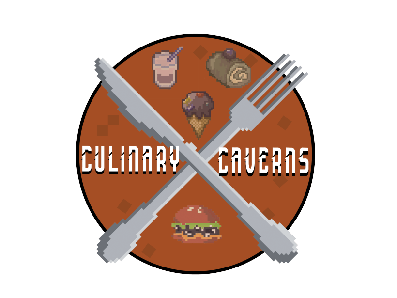

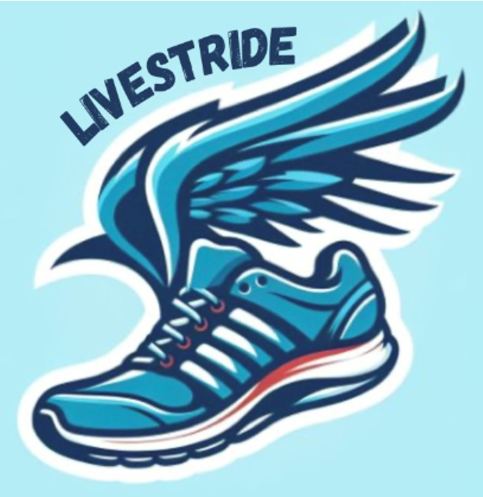

Projects
OpenCourt App
- Collaborated with a team to develop a cross-platform mobile app using React Native, Expo, and JavaScript, backed by Firebase Authentication and Firestore to enable users to efficiently organize pickup basketball games.
- Utilized HTML elements and CSS styling to create an engaging and interactive user interface.
- Implemented React Native Maps functionality to mark user location and Villanova’s on-campus basketball courts, enabling users to view nearby courts with their associated names and descriptions.
- Implemented court check-in pages to enable real-time court check-ins and display active users.
- Built comprehensive user profiles supporting photos, bios, and a badge/achievement system.
- Developed social functionality including friend lists, friend requests, DMs, group chats, court-specific chatrooms, reactions, threaded replies, and Tenor GIF API support for cohesive communication.

Culinary Caverns
- Collaborated with a team of interns to develop a multi-level 2D mining game utilizing Unity Game Engine and C# scripting.
- Programmed various game features including player movement and animation, terrain seed generation, abilities for the player to break and collect blocks, and a dynamic inventory UI system to store and show collected items.
- Implemented background music, sound effects, and level completion cues to enhance the user experience.
- Contributed to game and level design by coordinating and facilitating collaboration between team members through the use of GitHub and Trello, and organizing Discord meetings.
- Created for submission to Games for Love's Cause Jam to be featured in a charity bundle sold to raise funds to support children in hospitals.

NBA Playoff Prediction Classification Model
- Collected 270 team-season observations across 9 NBA seasons via the nba_api REST API, engineering 23 features spanning traditional, advanced, and efficiency statistics.
- Trained and compared 7 scikit-learn classifiers, including Logistic Regression, Random Forest, Gradient Boosting, SVM, and MLP Neural Network using stratified 5-fold cross-validation and GridSearchCV hyperparameter tuning.
- Achieved 86.7% F1 and 91.6% ROC-AUC on held-out test data; conducted feature importance analysis and error analysis to identify model limitations around borderline playoff teams.
Image-Based Search Engine
- Developed an image similarity search system leveraging deep learning and vector-based retrieval to allow users to upload an image and receive visually similar matches from a Kaggle dataset.
- Implemented a pretrained ResNet50 model (PyTorch) as a feature extractor to generate 2048‑dimensional embeddings capturing high‑level visual characteristics.
- Built a dual‑index FAISS vector search pipeline supporting L2 and cosine similarity.
- Developed a FastAPI REST API for real‑time inference and a React frontend for image upload, preview, and ranked results displaying distances and corresponding dataset images.
Machine-to-Machine File Transfer System
- Developed a simplified FTP-style client-server system using Python sockets to simulate machine-to-machine (M2M) communication in a controlled network environment.
- Engineered TCP-based socket communication to enable reliable file uploads, downloads, and session termination between autonomous client and server components.
- Designed and implemented core M2M principles including connection establishment, command parsing, and file integrity verification, mimicking real-world IoT device interactions.
- Conducted structured simulations to validate system reliability and ensure consistent performance.
Encryption Algorithm Simulation
- Developed two interactive Python programs to simulate symmetric (AES) and asymmetric (RSA) encryption using the cryptography library.
- Implemented AES encryption with Fernet, including key generation, message encryption/decryption, and a user-friendly console interface.
- Built RSA encryption functionality with key pair generation, secure key storage using PEM files, and message encryption/decryption using OAEP padding and SHA-256 hashing.
- Enabled file-based key and message management to simulate real-world secure communication workflows.
Villanova University x Cuatro Caminos Coffee – Business Consulting Project
- Served as student consultant on a 4-person team evaluating a proposed vendor partnership between Villanova Dining and a Panama based specialty coffee farm, conducting stakeholder interviews with the farm’s leadership, a U.S. importer/roaster, and Villanova’s dining director.
- Led third-party vendor and supply chain analysis, evaluating sourcing, import, and roasting logistics to validate the partnership, identifying a 22% cost reduction versus Villanova’s existing wholesale contract.
- Researched traceability and transparency mechanisms (QR codes, RFID, blockchain) to support auditable, ethically sourced vendor relationships.
- Presented pricing analysis, risk considerations, and a go-forward recommendation to university stakeholders.

FairMark NIL
- Built and iteratively refined a full-stack web application for evaluating Division I NIL sponsorship offers using Lovable, GitHub Copilot, React, Supabase, and the Google Gemini API.
- Defined product requirements and AI analysis logic for generating market-range assessments, confidence levels, and negotiation guidance from athlete profile and deal-term inputs.
- Used AI-assisted development workflows to create features including PDF/DOCX contract parsing, context-aware follow-up chat, Firecrawl-based profile enrichment, PDF reporting, and side-by-side offer comparison.
- Designed product requirements around user authentication, row-level data access, and de-identified benchmark analytics to support privacy-conscious handling of athlete information.

Perch – AI Job Discovery Platform
- Built and refined a full-stack user-friendly job matching platform using AI-assisted development tools (Lovable, GitHub Copilot), defining requirements, system architecture, and technical specifications.
- Architected a resumable, fault-tolerant company career site scanning pipeline (chunked job processing, rate-limit pacing, background workers) to reliably process 25,000+ listings within serverless execution constraints.
- Conducted technical QA and root-cause debugging across the stack, independently verifying API behavior, identifying data-integrity issues, and directing fixes rather than accepting unverified claims of completion.
- Evaluated and integrated 6+ third-party ATS platforms (Workday, Greenhouse, Ashby, Lever, SmartRecruiters, Avature, and others) by researching undocumented public APIs and defining fallback strategies for unsupported cases.
- Managed technical tradeoffs around cost, reliability, and API rate limits (Google Gemini) to keep a daily automated pipeline within free-tier constraints.

LiveStride – Gamified Fitness App Venture
- Led a 3-person team through a two-semester, hypothesis-driven venture-building process for a gamified cardio fitness app, running 6 structured test-and-learn cycles to validate product, pricing, and go-to-market assumptions.
- Conducted customer discovery interviews and surveys to define target personas and validate demand for core features including real-time feedback, VO2 Max tracking, and gamified progression.
- Designed and validated a subscription pricing model using survey-driven willingness-to-pay data, landing on a $4/month price point balancing affordability with sustainability.
- Built and iteratively refined an interactive phone and smartwatch prototype based on direct user testing, and developed go-to-market strategy including brand identity and a public landing page.

Weather Web Application
- Built a React-based weather application integrating external weather APIs to fetch and display real-time and forecasted weather data for user-selected cities.
- Implemented full-stack functionality including user authentication and MongoDB-based persistence for saving and managing favorite cities.
- Developed dynamic UI features including city search with dropdown suggestions, unit conversion, weather cards, and accessibility improvements through iterative development and bug fixing.
AR/VR in Sports - Emerging Technology Venture Research
- Researched and evaluated AR/VR, IoT, and sensor-based technologies for athletic training as part of a 3-person venture project, conducting a STEEPL feasibility assessment across social, technological, economic, and regulatory dimensions.
- Conducted primary research through 8+ stakeholder interviews spanning AR/VR faculty, an Accenture AR/VR practice lead, a sensor engineering specialist, and high school coaches and athletes to validate product requirements.
- Identified two core market gaps — limited individualized athlete feedback and coaches' inability to monitor large teams — and proposed a wearable sensor and AR-visualization solution to address them.
- Sized the addressable market using national participation data (1.1M+ student-athletes, 17K+ schools) and benchmarked the concept against incumbents Apple Watch and Hudl through competitive analysis.
Multi-level 2D Platformer Game
- Developed a dynamic and engaging multi-level 2D platformer game using Unity Game Engine and C# scripting.
- Implemented player movement mechanics and animations, incorporating player death logic and responsive level restart mechanics upon collision with traps.
- Designed challenging levels and integrated 2D enemy AI to enhance gameplay excitement.
- Integrated a real-time item collection system with a visible counter, background music, and sound effects for jumping, item collection, player demise, and level completion cues.
NBA Statistics Tracker Website
- Developed an NBA Statistics Tracker website in collaboration with a team using React.
- Utilized the capabilities of React.js, HTML, and CSS to build a dynamic and responsive user interface, ensuring an efficient and engaging user experience with weekly updates to statistics.
- Integrated navigation functionality to allow the user to efficiently and effectively navigate between different statistics pages.
- Implemented a database using Firebase to establish a secure user authentication system, allowing users to sign up and store credentials.
College Football Ranking System
- Designed algorithms using Python to rank college football teams in the Big 12 conference based on game outcomes and data from the 2016-17 season.
- Implemented Colley’s and Massey’s methods to evaluate teams based on various determining factors.
- Utilized linear algebra concepts such as systems of linear equations, matrix operations, and eigenvalues to analyze data and enhance accuracy of rankings.
- Processed datasets to extract insights and draw conclusions, showcasing experience in data analysis, Python programming, and mathematical modeling.
Movie List App
- Developed a React Native mobile app to create an interactive movie information tracker.
- Utilized Expo for project setup and used a FlatList to display a list of movies on a home screen.
- Integrated navigation functionality to display pages with relative details upon selecting movie titles.
- Implemented an efficient user interface allowing the user to fetch additional movie data from an API and effectively update the information seen on screen.
Recursive Problem Solving with JUnit Testing
- Utilized JUnit to test recursive methods to solve various problems, including exponentiation, string reversal, cleaning adjacent characters, and computing Fibonacci numbers.